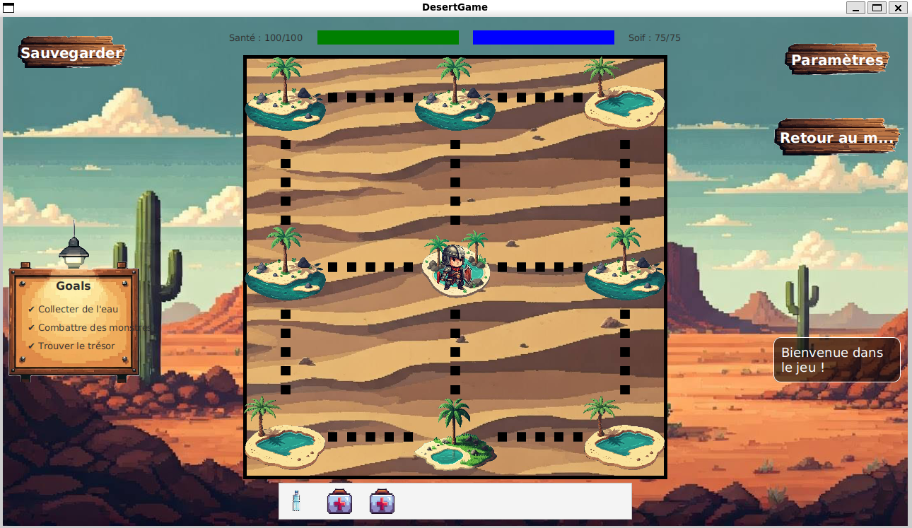

2025 - DesertGame


Description
Jeu d'aventure et de combat où le joueur doit survivre dans un désert hostile tout en recherchant un trésor. Le jeu propose une version textuelle (type Colossal Cave Adventure) et une interface graphique plus immersive avec déplacements et combats automatiques inspirés de Pokémon.
Version textuelle
- Interaction via commandes texte
- Gestion de la soif et exploration
- Combats contre ennemis
Interface graphique
- Déplacement entre 10 lieux
- Combats automatiques inspirés de Pokémon